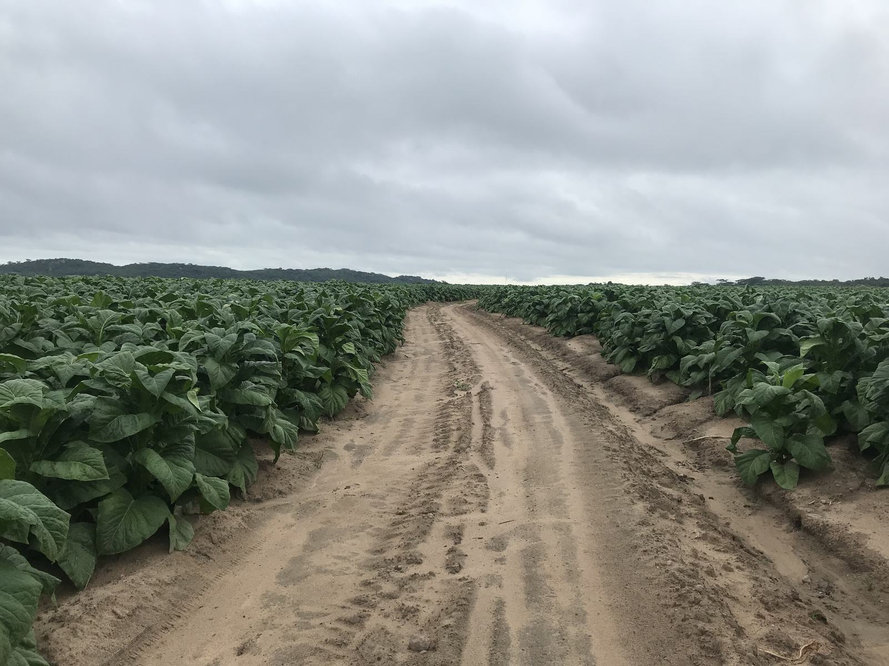
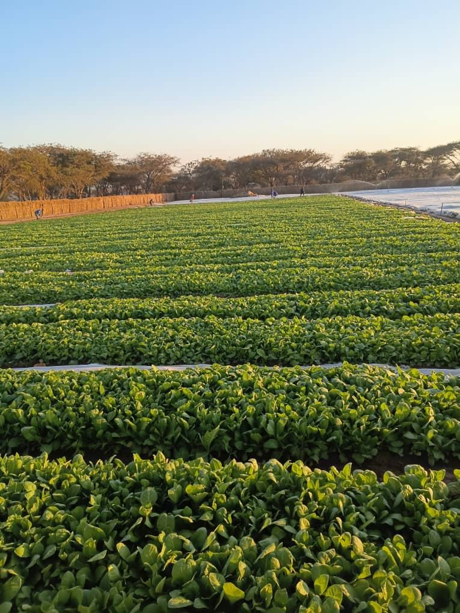
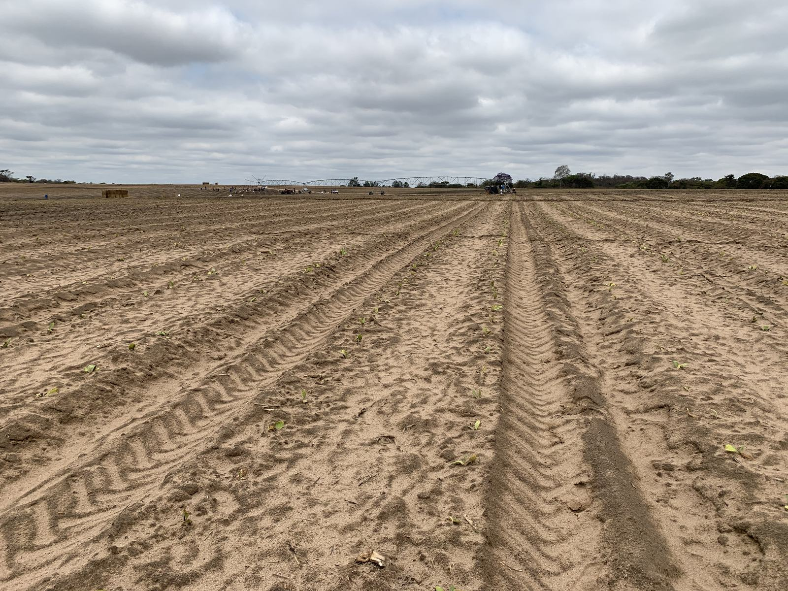
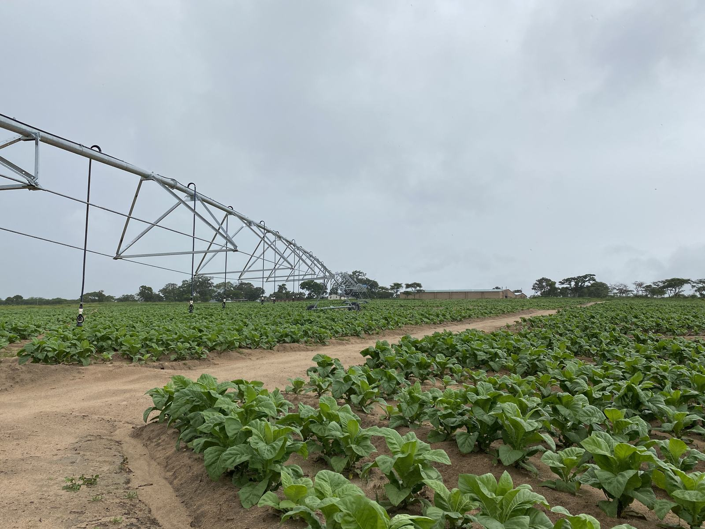
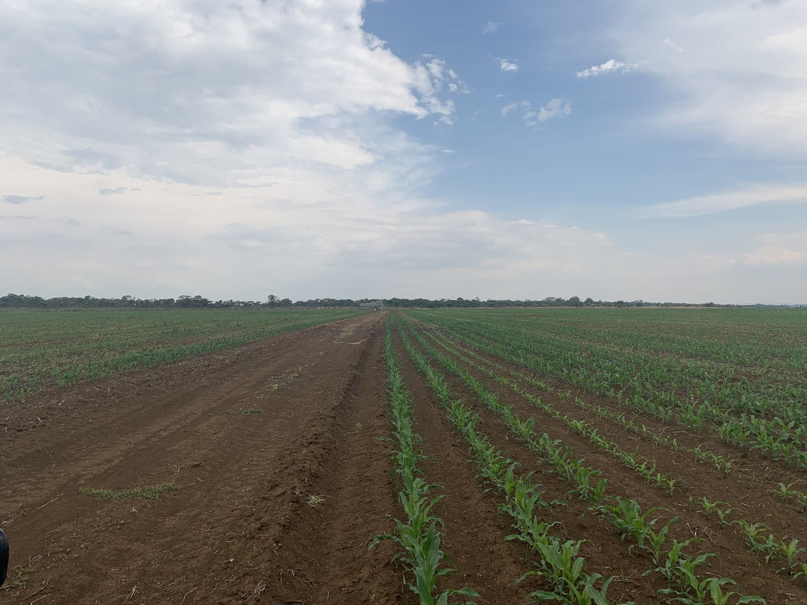
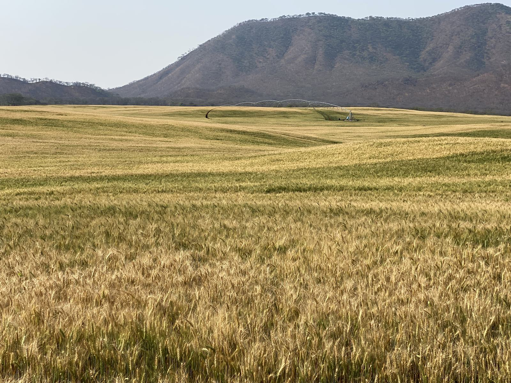
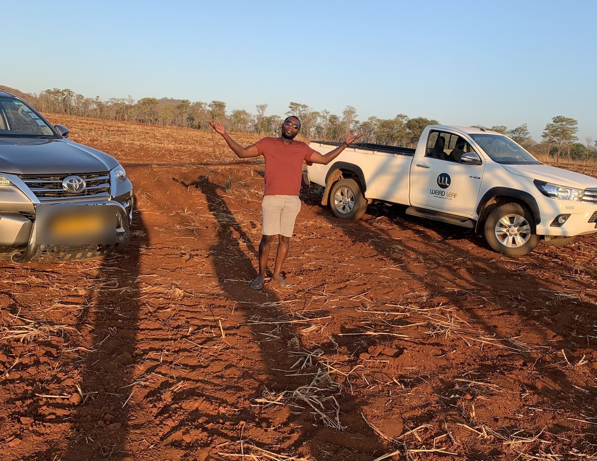

Financing a 100-hectare tobacco season
In April 2021 I built and negotiated the seasonal budget that a contract financier funded for our farming operation: roughly US$750,000 of input financing for 100 hectares of tobacco. This is a walkthrough of the model and the negotiation, rebuilt from my own records.
Everything here comes from the original workbook and email trail. The budget figures are the season plan as negotiated, not audited results; the one realized figure is labelled as such. Counterparty names and account identifiers are omitted. Photographs are from the operation’s farm sites, with location metadata removed.

1The problem
Tobacco is financed a season in advance. A contract financier advances the inputs (fertiliser, chemicals, coal, insurance, labour cash) and recovers it from the crop, so the budget is not an internal document: it is the loan application, the operating plan, and the negotiation position in one spreadsheet. Get it wrong in either direction and you are either underfunded mid-season or over-borrowed at 9.5% interest.
2The model
I built the season bottom-up in a five-sheet linked workbook: monthly labour headcounts (147 rising to 207 through reaping, costed per head), input schedules timed to agronomy (chemicals in July, fertiliser in August, coal for curing in September, hail insurance at US$650/ha in November), packing materials derived from projected bale counts, selling levies per bale, and interest computed monthly on the running drawdown. Every line lands in the month the cash actually leaves.
| Line | Amount (US$) |
|---|---|
| Budgeted revenue, 312,000 kg at $2.80/kg | 873,600 |
| Production and selling costs | 709,512 |
| Interest at 9.5% on running drawdown | 40,442 |
| Total financed requirement | 749,954 |
| Planned margin | 123,646 |
3The negotiation
The first submission went to the financier on 1 April 2021. It came back with questions, we met, and the revised model went back on 7 April holding cost of production at US$7,500 per hectare. Later that season the financier queried why an agronomist’s fertiliser recommendation covered 265 hectares when only 100 were financed; I re-scoped the recommendation to the exact fields being planted and, when the budget could not carry liquid fertilisers, confirmed with the agronomist that granular alone was agronomically sound. Holding a number means defending every line beneath it.
4The record
This was not a paper exercise. The operation ran three farm sites with 250+ seasonal staff at peak, on daily production, labour, and inventory reporting I designed and trained site clerks to run. In the 2020 season we marketed over 175 tons of tobacco (realized figure, from contemporaneous correspondence with our bank). Yields ran more than 25% above regional benchmarks against the KPI targets we set: 3.5 t/ha tobacco, 4 t/ha seed maize.





5Why it matters for analytics work
Everything I now do with SQL, Python, and Power BI, I first did with Excel and a counterparty across the table. The habits transfer directly: build bottom-up from operational reality, put every assumption where the reader can see it, label projections as projections, and expect each number to be challenged by someone whose money is on the line. That is the standard I hold analysis to, because I have been the person who had to live with it.
